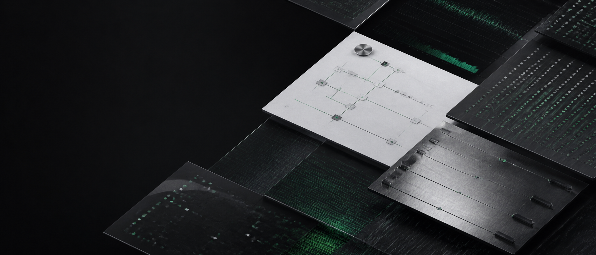
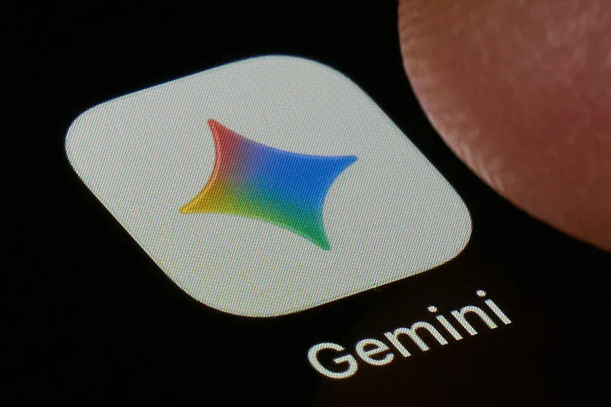
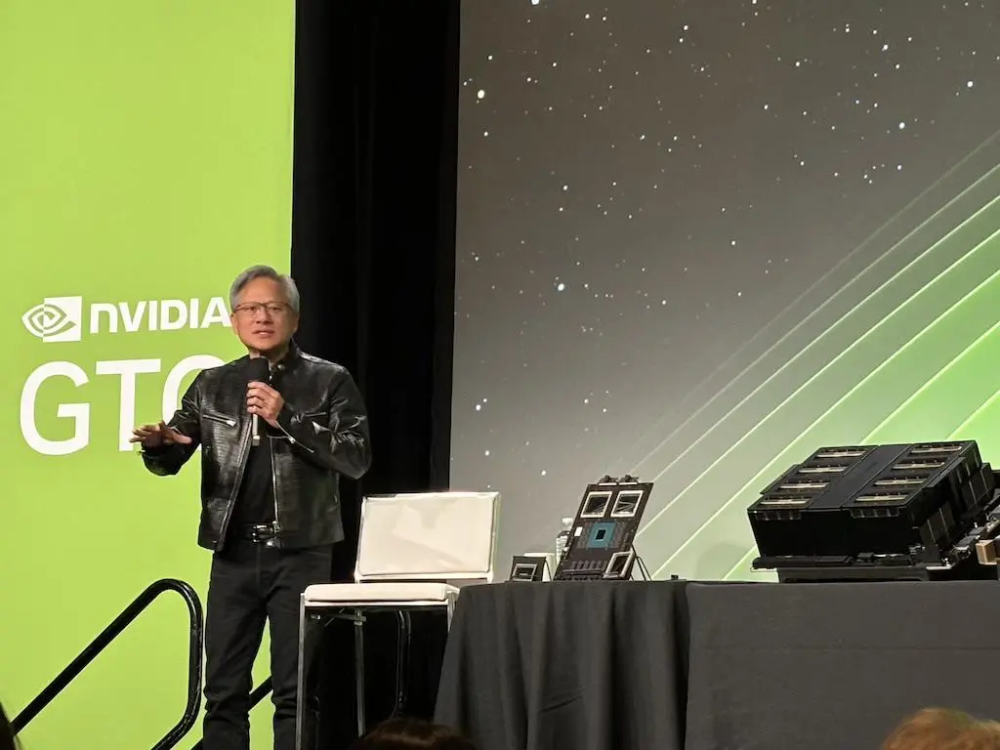
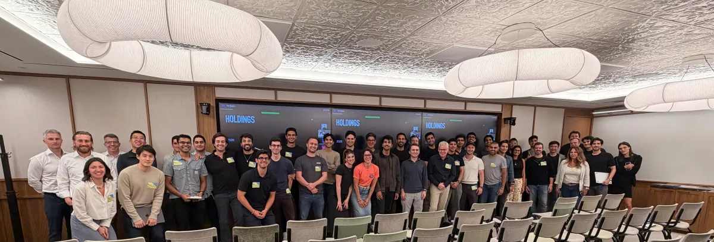
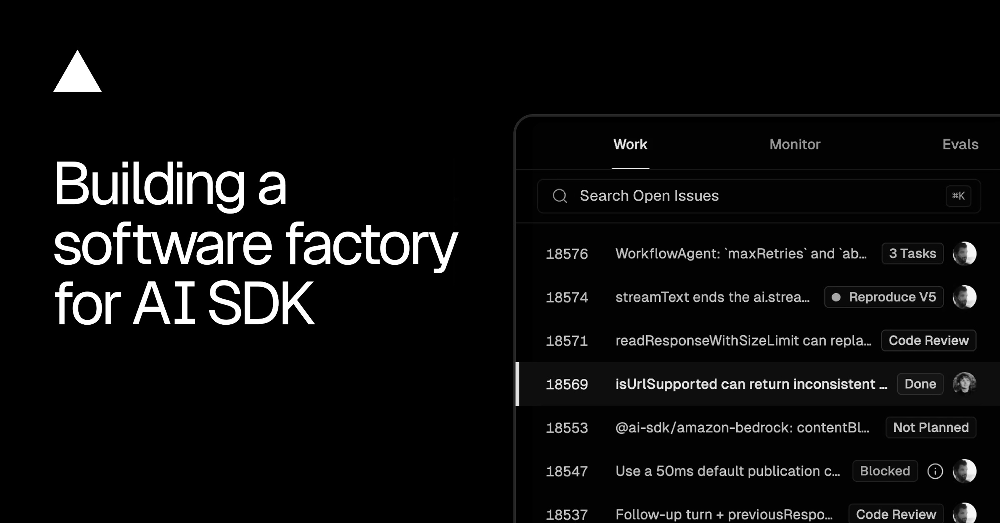
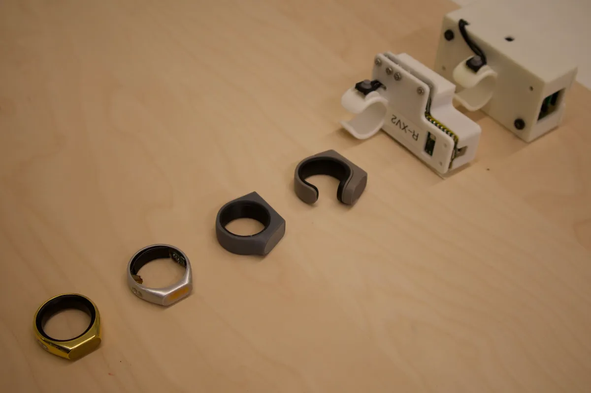
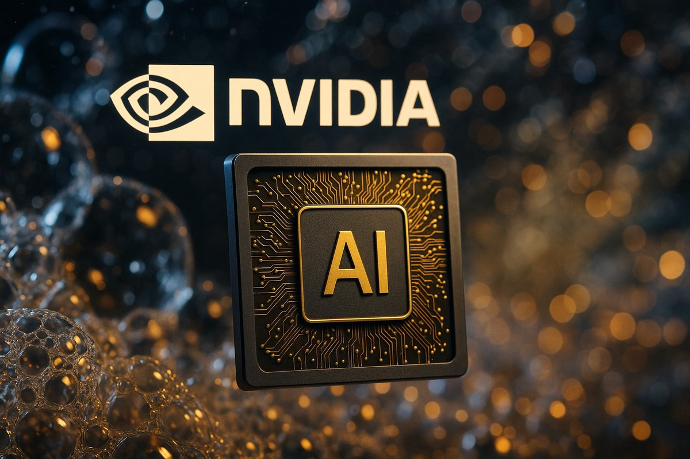
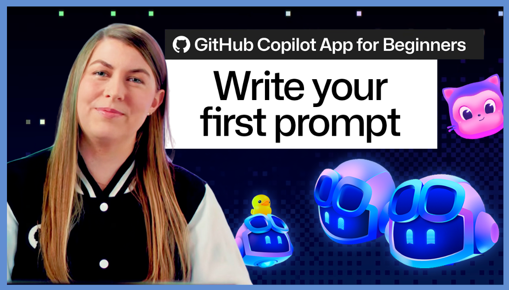

2026-08-13
VOL 317

读者，早。
这对创作者和中小团队的提醒很冷：入口越大，分发越便宜；账单越细，试错越透明；痕迹越多，偷懒越容易被看见。接下来真正拉开差距的，不是喊自己用了 AI，而是谁能把模型、工具、成本和责任边界放进日常工作。

Google CEO Sundar Pichai 在 8 月 11 日宣布，Gemini app 最近突破 10 亿月活，成为 Google 第 14 个达到十亿规模的产品。TechCrunch 报道称，这个数字只计算 Gemini app，不包含 Search、Workspace、Android 等其他入口；Google 还披露，63% 的 Gemini 用户会直接使用语音功能，Gemini 每天生成超过 1.5 亿张图片，iOS 端也已有超过 1 亿活跃用户。

WSJ 与 Axios 8 月 12 日报道，Nvidia 正与 BlackRock、Goldman Sachs、KKR、Apollo 等华尔街机构推进一套面向 AI 数据中心的融资结构，目标是形成超过 5000 亿美元的资本池。思路是用 AI 芯片和数据中心资产支持贷款，帮助云厂商和较小 AI 公司购买昂贵 GPU；报道也提到，风险在于芯片残值、技术迭代和 AI 需求回落时的连锁压力。

TechCrunch 8 月 12 日报道，OpenAI 参股的 Thrive Holdings 完成 20 亿美元新融资，估值达到 120 亿美元，投资方包括 SoftBank、D1 Capital Partners 和 Altimeter Capital。Thrive 的模式接近 AI 版私募运营平台：收购会计、IT 等传统服务公司，再派工程团队把 AI 放进工作流。公司称 Current 会计平台覆盖 50 多家公司和 2000 多名专业人员，TaxAI 已处理 7000 多份税表，准确率 98%，参与公司的税务准备时间下降超过 30%。

TechCrunch 8 月 12 日报道，Anthropic 已开始在 Claude 输出中加入机器可识别的隐形水印，用来标记 AI 生成或编辑过的文本。报道称，这项调整是为了满足欧盟 AI Act 透明度代码要求；反弹主要来自担心在学校、工作和写作场景中暴露 AI 使用痕迹的用户。文章也指出，真正有问题的是把 Claude 输出原样当成人工成果提交。
TechCrunch 8 月 12 日报道，在拉斯维加斯 Ai4 会议上，Geoffrey Hinton、Fei-Fei Li 和 Andrew Ng 围绕开放模型表达了不同立场。Ng 担心少数大公司成为 AI gatekeepers，主张通过多供应商和开放模型保持竞争；Hinton 区分开源代码与开放权重，认为开放权重更容易被低成本改造成有害用途；Fei-Fei Li 则反对把开放和封闭做成二选一，主张不同层级采用不同开放程度。

Google Research 8 月 12 日发布研究文章，提出 knowledge profiling 框架来拆解 LLM 事实错误来源。研究结论是，前沿模型往往已经编码了大量事实，问题更多出在回忆失败，而不是从未学过；换句话说，模型像仓库里有货却找不到货架。文章把这称为 parametric factuality 的 recall bottleneck。
Business Insider 8 月 12 日引用 Ramp AI Index 称，Anthropic 仍在美国中小企业采用率上领先，7 月有 43.5% 的企业使用 Anthropic 产品，OpenAI 为 39.7%；但在高端模型支出上，Anthropic Fable 5 的收入只达到 OpenAI GPT-5.6 Sol 的 75%。报道还提到，前 1% AI 支出者 7 月每名员工中位支出达到 7400 美元，coding agents 是支出上升的重要驱动。

Vercel 8 月 12 日发文介绍 AI SDK 的“software factory”维护方式。文章称 AI SDK 每周 npm 下载量超过 2000 万，GitHub stars 超过 2.6 万；维护团队要同时追踪模型供应商、React/Next.js/Svelte/Vue 等 UI 绑定、agent 运行沙箱，以及 Codex、Claude Code、Pi 等 harness 适配。Vercel 的核心判断是，AI SDK 的维护已经变成一条持续生产线。

GitHub Blog 8 月 12 日发布 Copilot app 入门文章，重点不是新模型，而是引导用户选择上下文、模型和第一个任务。文章面向刚打开 AI 工具却不知道怎么开口的人，强调把目标、文件上下文和期望输出说清楚，再让 Copilot 开始处理任务。

TechCrunch 8 月 12 日报道称，AI coding agent Devin 背后的 Cognition 已经在与投资人讨论新一轮融资，潜在估值至少 400 亿美元。公司 5 月刚以 260 亿美元估值融资 10 亿美元；TechCrunch 引述过往信息称，Cognition 当时年化收入运行率为 4.92 亿美元，企业客户使用 Devin 的月度增长连续六个月达到 50%。
TechCrunch 首页 8 月 12 日显示，AI 应用构建平台 Lovable 确认 133 亿美元新估值，并再次融资 4 亿美元。该事件与 Cognition 同日出现在 AI 创业融资列表里，说明 coding agent 与 app-building agent 仍是资本最愿意追逐的应用层赛道之一。

Claude 水印引发用户反弹，TechCrunch 文章观察到 Reddit 上有人担心学生、记者、写作者会被识别出使用 AI。报道同时指出，若记者只是用 AI 总结长访谈并自己写作，水印并不是问题；真正危险的是把 AI 整段输出直接复制进作品、论文或工作成果。

TechCrunch Equity 8 月 12 日采访 Sandbar 联合创始人 Mina Fahmi，讨论其 Stream 私密语音戒指。报道提到，AI 会议记录硬件已经从卡片、吊坠、别针扩展到耳机和戒指；Sandbar 已累计融资 3600 万美元，其中包括 Adjacent 与 Kindred Ventures 领投的 2300 万美元 Series A。Fahmi 的核心判断是，语音硬件必须让人保持控制感，才可能突破上一代 AI wearable 的尴尬。

Thrive Holdings 的融资把 AI 应用层的一个方向讲得很清楚：不只卖 SaaS，而是买下传统服务业务，再用 AI 改写人工密集流程。TechCrunch 报道中，Thrive 已有会计和 IT 两个平台，并准备进入建筑环境相关的监管服务，处理许可、认证、检查记录和持续运营材料。
Cognition 传出至少 400 亿美元估值谈判时，TechCrunch 同文提到其客户包括 Mercedes-Benz、NASA 和 Goldman Sachs，并强调 Devin 常被用于旧软件更新、平台迁移等长尾任务。这个定位比“替代工程师”更接近企业自动化预算。

Nvidia 与华尔街机构讨论的 AI 数据中心融资结构，被 Axios 形容为给 AI boom 加燃料也加风险。超大云厂商本来就计划在 2026 年投入巨额 AI 基建，而这类资本池若成形，会让较小玩家也更容易拿到昂贵 GPU；但如果需求或价格预期下滑，资产支持贷款会放大调整。

GitHub 8 月 12 日发布 Copilot app 第一条 prompt 教程，面向刚开始使用 Copilot app 的用户，示范如何把目标、上下文、模型选择和期望结果讲清楚。它不是炫技功能，而是把“会不会问”变成产品内引导，降低第一次使用 AI coding agent 的心理门槛。